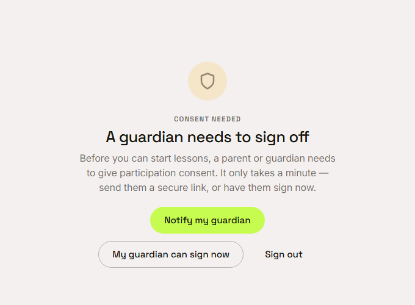
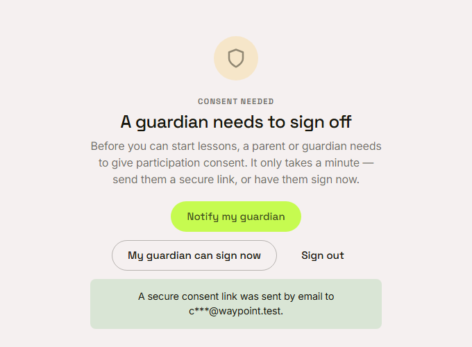

Waypoint · Video 089
When a guardian needs to sign off
A minor without consent is stopped at one clear page
A guardian needs to sign off

Plain words, and something to press
Notify my guardian

A secure link goes to the guardian by email
My guardian can sign now
Imani is signed out
The next sign-in leads to the guardian consent page
The guardian gives consent from their own account
Things to remember
A minor without consent is stopped at one clear page
The page explains the problem in plain words
Notify my guardian sends a secure link by email
My guardian can sign now leads to the guardian consent page